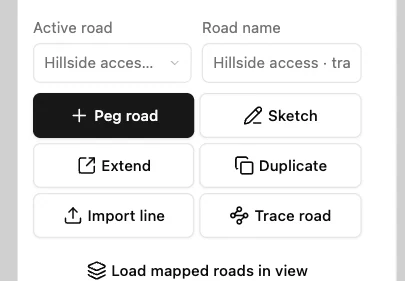
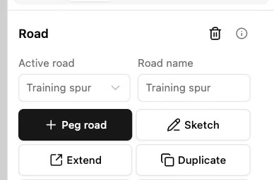
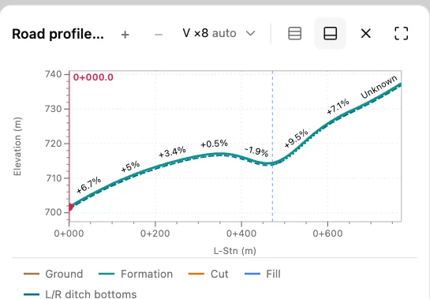

Import a road line
Download the small Training spur file below. It contains one line on the Hillside access training terrain. Open the training project in Engineering workbench.
1. Choose the line file
In Design, select Import line and choose training-spur.geojson. DDC Access reads its coordinates and adds the line to the project.

2. Check the active road
Read Road name. The imported feature is named Training spur, and it is now the active road.

3. Check the profile against the terrain
In Linked overview, read the Road profile for the imported alignment. A plotted ground line confirms that the training surface supplies elevations along this line.
